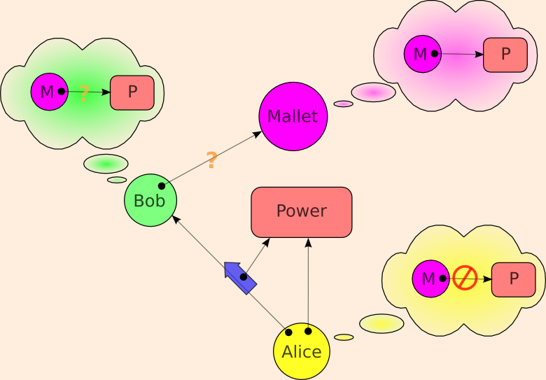

| |
Prohibiting |
||||||
The Four Delegation Problems

Alice gives Authority to Bob. Mallet wants that authority, but Alice wants to deny this authority to Mallet. There are two yes/no questions, corresponding to the two question marks above.
- Are Bob and Mallet supposed to be able to communicate?
- Does Bob wish to give Mallet the authority, despite Alice's wishes to the contrary?
| Bob on Alice's Side |
Bob on Mallet's Side |
|
|---|---|---|
| Bob & Mallet may not speak |
||
| Bob & Mallet may speak |
The above links explain each of these cases, and examines the differences in how Capabilities vs. Access Control Lists (ACLs) address these issues. In summary
-
Any security system must start by solving perimeter security. Capabilities and ACLs build on the same solutions to this problem.
-
ACLs have an expressiveness hole on confinement: not only can they not enforce the needed prohibitions, they cannot even express these prohibitions. Capabilities can easily express these prohibitions. Capability systems can easily enforce a subset of these prohibitions (capability confinement), and with great difficulty enforce the full set of prohibitions.
-
In an ACL system, when an agent engages in an action, all relevant authority the agent posseses is implicity applied to determine whether the action should be allowed. In a capability system, the authority applied to an action is only the authority explicitly brought to bear by the agent -- a subset of the authority possessed by the agent. This is accomplished with no extra notation by combining designation with authority. Only this latter discipline enables one to write unconfusable deputies that can perform a reasonable range of jobs.
Once one can write such unconfusable deputies, Mallet might still be able to exploit bugs in Bob in order to confuse Bob into leaking authority. ACL-like mechanisms can be used as reinforcements to make such exploitability less likely for a certain class of bugs. -
Capabilities have an expressiveness hole on Communicating Conspirators: They cannot express this prohibition, and therefore they cannot enforce it. Unlike capabilities, ACLs can express this prohibition. One may see this hole as the dual of the ACL/confinement expressiveness hole. Can ACLs enforce this prohibition? No. In fact, even with complete omniscience and omnipotence over the state of a system, no force in the universe can enforce this prohibition, since the only difference between what's allowed and what's prohibited is how we choose to describe it.
Only Prohibit What You Can Prevent
Historically, capabilities have suffered in competition with ACLs because of a perception that they were weaker than ACLs at expressing limits on delegation. (ref Bobert, Gong, Wallach) As we've seen, the one place where capabilites are indeed weaker at expressing a prohibition is the one case where the prohibition is unenforceable -- indeed incoherent. ACLs, by enabling such prohibitions to be expressed, only weakens security. By leading users and programmers to make decisions under a false sense of security about what others can be prevented from doing, ACLs seduce them into actions that compromise their own security.
By dividing up the issue of prohibiting delegation into these four categories, we see that
- Perimeter Security is neutral between the two,
- for Confinement and Confused Deputy capabilities have a strict expressiveness and enforceability advantage over ACLs,
- and for Communicating Conspirators, capabilities have the advantage of not expressing that which cannot be enforced.
This misunderstanding has misled the computer world into building ACL-based systems for around 20 years (Unix, MacOS, Windows9x, WindowsNT). For capability systems to catch on, they must be viable in an ACL-infested world. What are the options for interfacing capability secure systems to a legacy of ACL permissions? Answering this question should be a fruitful area for research.
The Third School: Cryptography
Modern cryptography is creating a third school of computer security. This school is characterized by
- the assumption that authority and identity are rooted in knowledge of secrets,
- the requirement that all prohibitions be enforeable.
We see a natural affinity between capabilities and modern cryptography. Not only can capabilities be implemented cryptographically, but many (not all) of the security relationships being explored by modern cryptography can be naturally expressed in capabilities. The world of financial cryptography has converged on bearer instruments, almost by necessity given the above two principles. Capabilities are a pure logic of bearer instruments. We expect interfacing capabilities to modern cryptographic systems -- those founded on the above two principles -- to generally be straightforward.
We see no comparable affinity between ACLs and modern cryptography.
Is Delegation an "Assignment of Rights"?
What we refer to here as "delegation of authority" is in many ways similar to what contract law would call "assignment of rights". An important difference is that, here, the acquisition of authority by the delegatee does not normally imply the loss of that authority by the delegator. By contrast, in contract law, the acquisition of rights by the assignee does normally imply the simultaneous loss of that right by the assignor. The Ode's taxonomy of kinds of rights refers to this as the distinction between shared and exclusive rights.
For controlling access to physical objects, it's easier to create a system of exclusive rights, since they can be more easily moved than copied. Electronic access control systems -- whether based on capabilities, ACLs, or cryptographic protocols -- more easily support the creation of shared access rights. The Ode, ERTP (see also The Digital Path), and the Waterken IOU protocol show to build exclusive-rights transfer systems (one closer to the conventional meaning of "assignment of rights") as a layer of abstraction on top of a system of capability-based shared-rights.
We thank [May I acknowledge you by name?] for bringing both these similarities and differences with contract law to our attention.
Unless stated otherwise, all text on this page which is either unattributed or by Mark S. Miller is hereby placed in the public domain.
| |
|
report bug (including invalid html)
|
||||||||